Tomography
Assignment3-2
163059009, 16305R011
Contents
Assignment3-2
Rollno: 163059009, 16305R011
Init
clear all; addpath(genpath('l1_ls_matlab/')); file1='../data/t1_icbm_normal_1mm_pn0_rf20.rawb.png'; file2='../data/t1_icbm_normal_1mm_pn3_rf20.rawb.png'; img1=imread(file1); img1=double(img1); img2=imread(file2); img2=double(img2); figure('name','Original brain cross section image'); imshow(img1,[]); title('\fontsize{10}{\color{red}Brain cross section image}'); axis tight,axis on; o1 = get(gca, 'Position'); colorbar(),set(gca, 'Position', o1);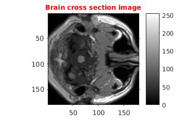
0) Finding Projection
totalAngles=18; theta = randi([0 179],1,totalAngles); [R,xp] = radon(img1,theta);
Part a) RamLak filter
We have implemented our OWN RAMLAK implemented
imgRamLak=RamLakFilter(R,theta); figure('name','Reconstruction using RamLak Filter'); imshow(imgRamLak,[]); title('\fontsize{10}{\color{magenta} Reconstruction using "Own" RamLak Filtered BP}');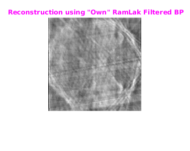
Using irandon method of Matlab
I2 = iradon(R,theta,'linear','Ram-Lak'); figure('name','Reconstruction using RamLak Filter'); imshow(I2,[]); title('\fontsize{10}{\color{magenta} Reconstruction using "iradon" RamLak Filtered BP}');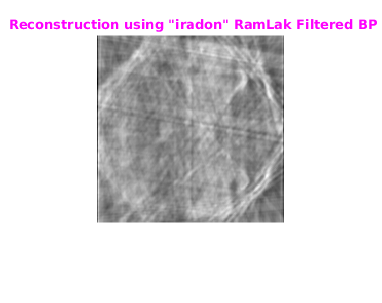
2. Part b) Compressed Sensing
E(x) = y − Ax^2 + λ|x|_1 y= sum total of # of bins for each angle
m=size(R,1); n=size(img1,1)*size(img1,2); A=CSProjMtx(m,n,theta); At=A';
2.1 Sovling equation using L1_Ls
vecR=reshape(R,m*numel(theta),1); y=vecR; lambda = 8; [beta,status]=l1_ls(A,At,size(y,1),n,y,lambda); dctcoeff=reshape(beta,size(img1,1),size(img1,2)); f=idct2(dctcoeff); figure('name','Reconstruction using CS'); imshow(f,[]); title('\fontsize{10}{\color{magenta}Reconstruction using CS}');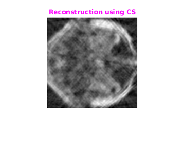
3. Part c) Coupled CS with 2 slice
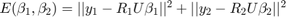 + 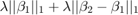
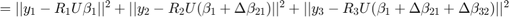 + 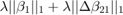
Convert this in to matrix form.
totalAngles=18; theta1 = randi([0 179],1,totalAngles); theta2 = randi([0 179],1,totalAngles); [R1,xp1] = radon(img1,theta1); [R2,xp2] = radon(img2,theta2);
3.1 Init Operator
projSize=size(R1,1);
h=size(img1,1);w=size(img1,2);
coupleSize=2;
A=CoupledCSProjMtx(projSize,h,w,coupleSize,{theta1,theta2});
At=A';
3.2 Solving
R=horzcat(R1,R2); vecR=reshape(R,projSize*totalAngles*coupleSize,1); y=vecR; m=size(y,1);n=size(img1,1)*size(img1,2)*coupleSize; lambda = 8; [betas,status]=l1_ls(A,At,m,n,y,lambda);
3.3 Showing Result
bcell=getBetaMtxFromVec(A,betas);
beta1=bcell{1};betaDiff=bcell{2};
beta2=betaDiff+beta1;
% Image 1
dctcoeff=reshape(beta1,size(img1,1),size(img1,2));
f=idct2(dctcoeff);
figure('name','Reconstruction using CS');
subplot(1,2,1),
img=(f-min(f(:)));img=img/max(img(:));
imshow(img),colorbar
title('\fontsize{10}{\color{magenta}Reconst using Coupled CS: Image 1}');
% Image 2
dctcoeff=reshape(beta2,size(img1,1),size(img1,2));
f=idct2(dctcoeff);
subplot(1,2,2),
img=(f-min(f(:)));img=img/max(img(:));
imshow(img),colorbar
title('\fontsize{10}{\color{magenta}Reconst using Coupled CS: Image 2}');
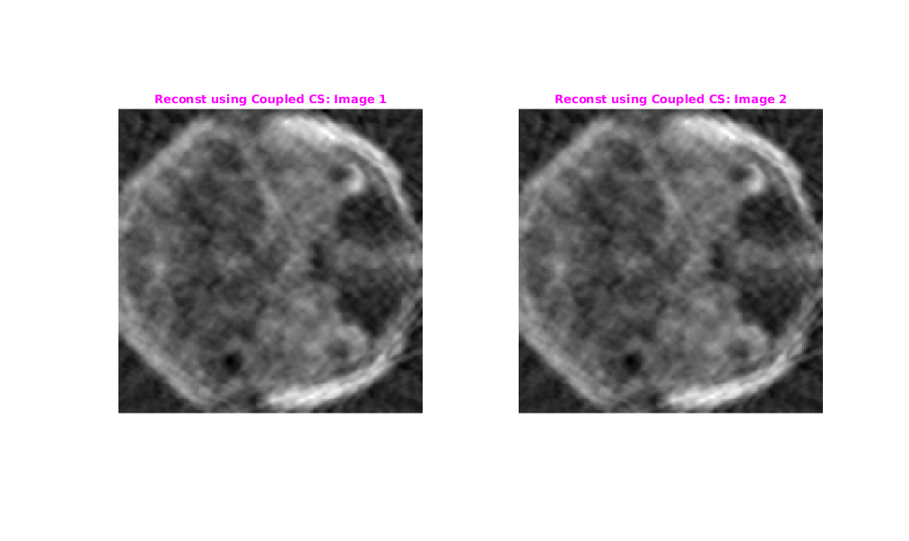 4. Part c) Coupled CS with 3 Slices
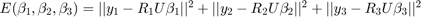 + 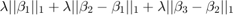
+ 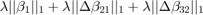
Convert this in to matrix form.
file1='../data/slice_50.png'; file2='../data/slice_51.png'; file3='../data/slice_52.png'; img1=imread(file1);img1=double(img1); img2=imread(file2);img2=double(img2); img3=imread(file3);img3=double(img3); [h,w]=size(img1); %making image as sq as iradon return sq image if (h<w) diff=w-h; left=floor(diff/2); right=ceil(diff/2); img1=padarray(img1,[left,0],0,'pre');img1=padarray(img1,[right,0],0,'post'); img2=padarray(img2,[left,0],0,'pre');img2=padarray(img2,[right,0],0,'post'); img3=padarray(img3,[left,0],0,'pre');img3=padarray(img3,[right,0],0,'post'); end coupleSize=3; totalAngles=18; theta1 = randi([0 179],1,totalAngles); theta2 = randi([0 179],1,totalAngles); theta3 = randi([0 179],1,totalAngles); [R1,xp1] = radon(img1,theta1); [R2,xp2] = radon(img2,theta2); [R3,xp3] = radon(img2,theta3);
Original Image
figure('name','Original brain cross section image'); imshow(img1,[]); title('\fontsize{10}{\color{red}Brain cross section image}'); figure('name','Original brain cross section image'); imshow(img2,[]); title('\fontsize{10}{\color{red}Brain cross section image}'); figure('name','Original brain cross section image'); imshow(img3,[]); title('\fontsize{10}{\color{red}Brain cross section image}');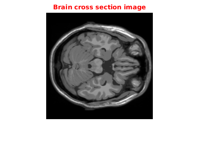 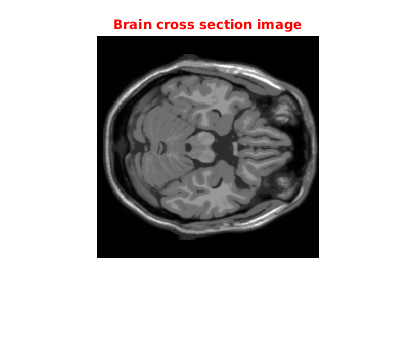 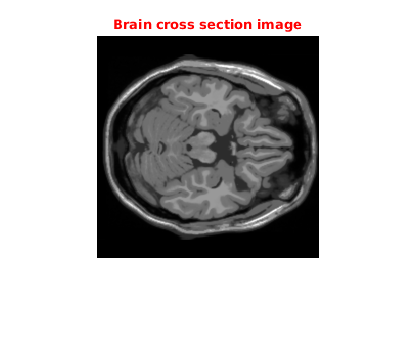
3.1 Init Operator
projSize=size(R1,1);
h=size(img1,1);w=size(img1,2);
A=CoupledCSProjMtx(projSize,h,w,coupleSize,{theta1,theta2,theta3});
At=A';
3.2 Solving
R=horzcat(R1,R2,R3); vecR=reshape(R,projSize*totalAngles*coupleSize,1); y=vecR; m=size(y,1);n=size(img1,1)*size(img1,2)*coupleSize; lambda =8; [betas,status]=l1_ls(A,At,m,n,y,lambda);
3.3 Showing Result
bcell=getBetaMtxFromVec(A,betas);
beta1=bcell{1};betaDiff21=bcell{2};
beta2=betaDiff21+beta1;betaDiff32=bcell{3};
beta3=betaDiff32+beta2;
% Image 1
dctcoeff=reshape(beta1,size(img1,1),size(img1,2));
f=idct2(dctcoeff);
figure('name','Reconstruction using CS');
subplot(1,3,1),
img=(f-min(f(:)));img=img/max(img(:));
imshow(img),colorbar
title('\fontsize{10}{\color{magenta}Reconst using Coupled CS: Image 1}');
% Image 2
dctcoeff=reshape(beta2,size(img1,1),size(img1,2));
f=idct2(dctcoeff);
subplot(1,3,2),
img=(f-min(f(:)));img=img/max(img(:));
imshow(img),colorbar
title('\fontsize{10}{\color{magenta}Reconst using Coupled CS: Image 2}');
% Image 3
dctcoeff=reshape(beta3,size(img1,1),size(img1,2));
f=idct2(dctcoeff);
subplot(1,3,3),
img=(f-min(f(:)));img=img/max(img(:));
imshow(img),colorbar
title('\fontsize{10}{\color{magenta}Reconst using Coupled CS: Image 3}');
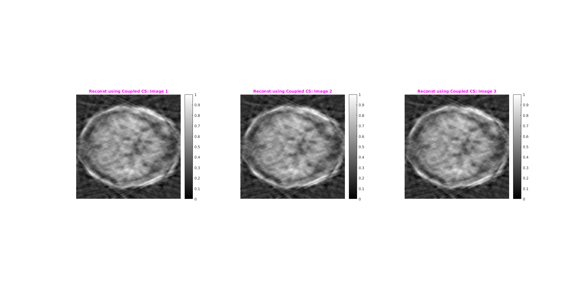